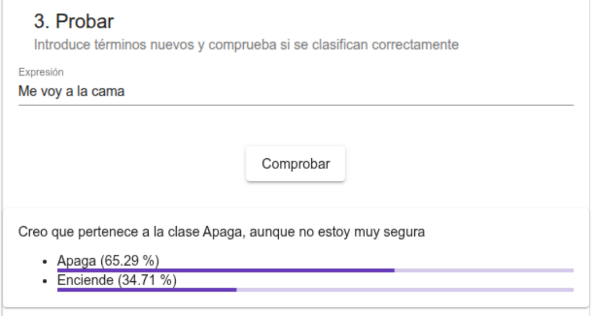
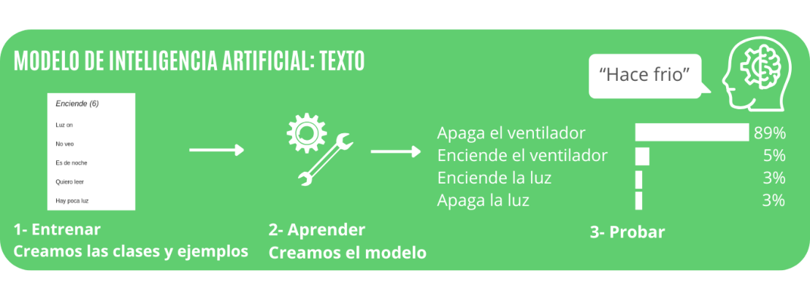
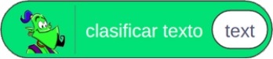
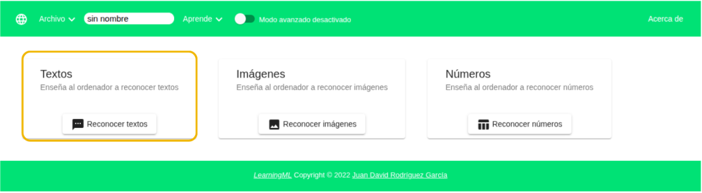
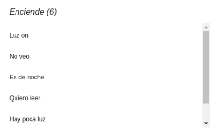
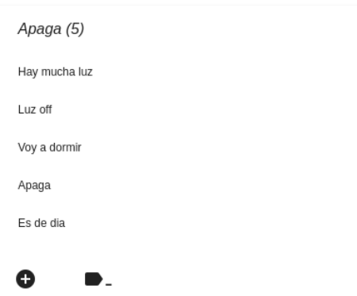
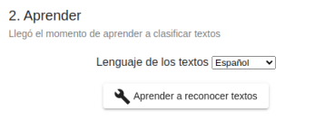
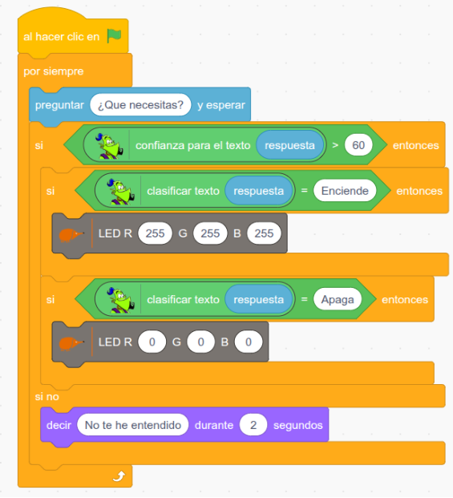

Asistente virtual
Entrenar un modelo de texto que interprete órdenes para encender o apagar el LED RGB.
LearningML + EchidnaBlocks1. ¿Qué vamos a hacer?
Entrenar un modelo de texto que interprete órdenes para encender o apagar el LED RGB.
Qué aprenderás
Reconocer los componentes, construir el programa por etapas, comprobar su funcionamiento y proponer mejoras propias.
Material necesario
LearningML (texto); teclado; LED RGB. Necesitarás también la placa, un cable USB-C y un ordenador con EchidnaML.
2. Programamos · bloques originales
Construye el programa siguiendo exactamente la imagen de la guía oficial (página 45).

2. Laboratorio paso a paso
- En LearningML crea un modelo de texto con las clases «Enciende» y «Apaga».
- Introduce frases variadas en ambas clases, entrena el modelo y pruébalo con frases nuevas.
- En EchidnaBlocks pregunta «¿Qué necesitas?» y clasifica la respuesta.
- Si la confianza supera 60 %, enciende el RGB blanco para «Enciende» o apágalo para «Apaga»; si no, indica que no has entendido.
Comprueba cada paso en la placa real. Los nombres de algunos bloques pueden variar ligeramente según la versión de EchidnaML instalada.
Imágenes y bloques de la guía original
Fotografías de los componentes, bloques auxiliares y ejemplos de programación incluidos en el PDF.







3. Comprueba que funciona
4. Mejóralo
- Sube el umbral de confianza al 80 %.
- Amplía los ejemplos de entrenamiento.
- Añade órdenes para colores rojo, verde y azul.
5. Entrega y reflexión
Guarda el proyecto con un nombre reconocible. Entrega una captura de los bloques y una breve explicación de qué hace, qué has probado y qué mejora has conseguido.
Pregunta: ¿Qué cambiarías para que este proyecto fuera útil en una situación real?
Adaptación didáctica para el IES Sol de Portocarrero. Imágenes originales de Echidna Educación, «Proyectos de inicio con EchidnaML», licencia CC BY-SA 4.0. Texto adaptado y reorganizado. Licencia y condiciones de reutilización